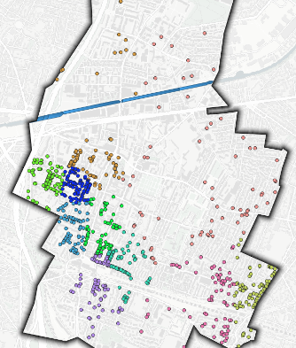
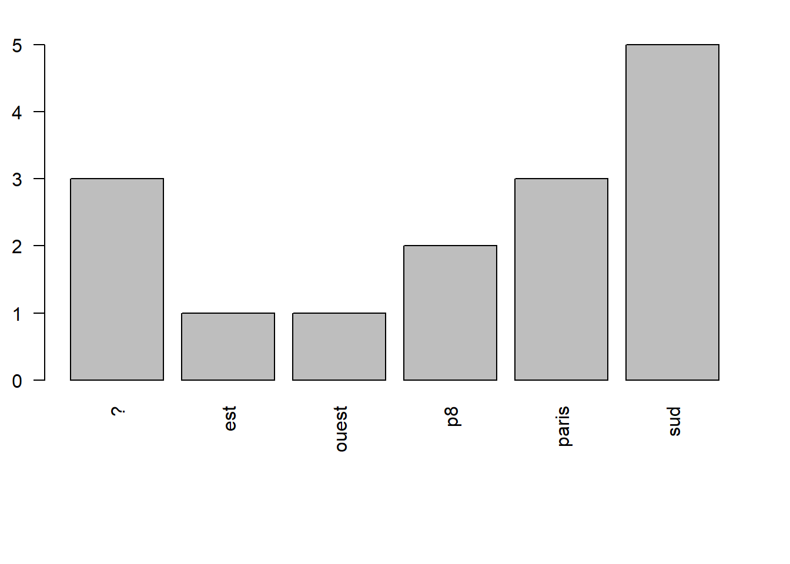
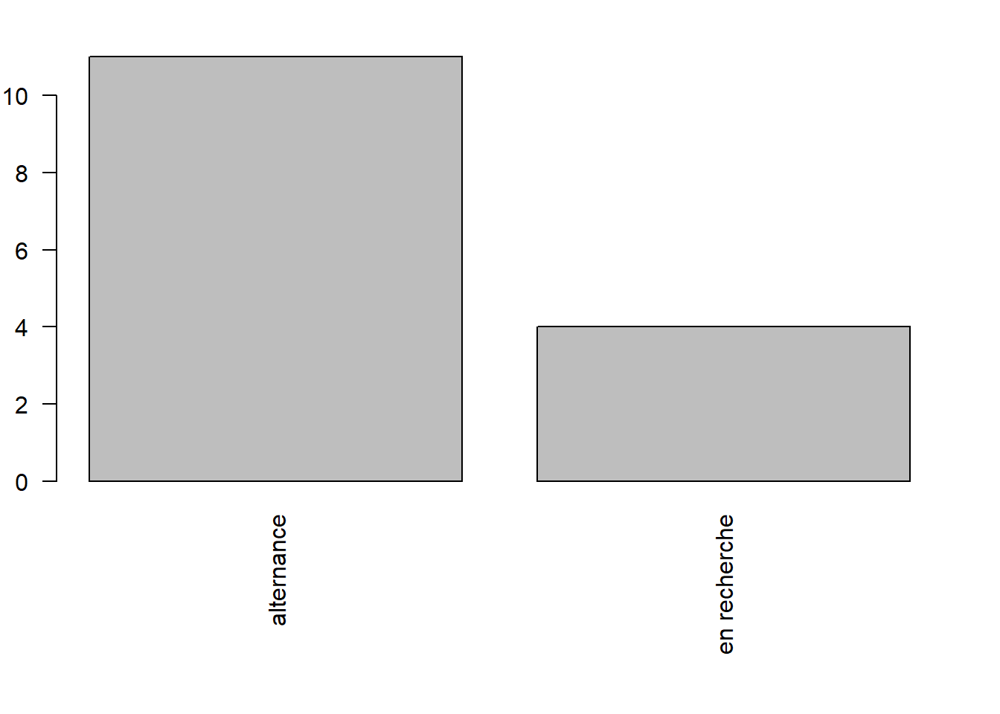
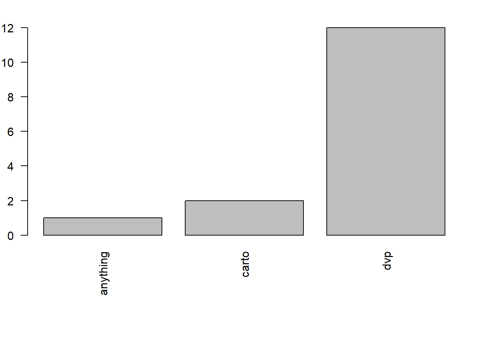

[1] 109001_introduction
options en tête knitr::opts_chunk$set(echo = TRUE)
1 Objectif καλὸς κἀγαθός
Faire un plan de ville kalos kagathos avec OSM.
1.1 Le plan sucette de la ville de Bondy
A distribuer
Qu’observe t on ?
les noms des rues
les différents bâtiments
le graticule / la liste des rues
Autres remarques.

extraction de la carte du patrimoine de Bondy Habitat 2019
1.2 La proposition OSMatic
2 Les outils
2.1 OSM
2.2 Qgis
3 Méthode et déroulé
3.1 Le cercle vertueux
Il s’agit de mettre en place un cercle vertueux dans l’utilisation d’OSM : extraire, contribuer, vérifier sa saisie en extrayant de nouveau et contribuer pour l’améliorer.
JOUR 1 : extraction - saisie - contrôle données existantes et ajout de données manquantes dans OSM
JOUR 2 : nouvelle extraction etc…
JOUR 3 : cartographies variées permettant d’éventuelles nouvelles modifications
3.2 Evaluation
Pour chaque séquence, plusieurs cartes et un quizz. pas d’évaluation officielle.
Mais une évaluation collective, de type, combien d’éléments rajoutés dans OSM et un essai de mesure de leur qualité.
Eviter absolument le retour de bâton OSM, notamment pour l’année dernière :
https://forum.openstreetmap.fr/t/landuse-residential-supprime-a-bondy-et-pavillon-sous-bois/9562/9

donc impérativement mettre dans le commentaire de changeset : #Paris8-Bondy2024 et examiner les contributions dans le détail avec les outils de contrôle de qualité d’OSM
https://resultmaps.neis-one.org/
3.3 Le collaboratif
Un mot au sujet du collectif, ce cours est aussi l’occasion de tester une organisation de travail en groupe (c’est la raison d’être d’OSM) donc autant de groupe que de secteurs de bureaux (32). Pour chaque étudiant, 2 secteurs.

3.4 Précisions techniques
3.4.1 Support et procédures
Le support, fait sous R Quarto, sert uniquement de “fil rouge”.
Les procédures employées sous QGIS sont à rechercher sur internet.
Essai : “Qgis compter les points dans un polygone” Quel est le menu qui permet de le faire ?
3.4.2 Dépôt git
copie du projet GIT en début et en fin de session
Dépôt des cartes sur le dépot P8
Déposer son image dans github dans le répertoire img/carteEtudiant du dépot coursP8 avec comme syntaxe : P8_prenom.pngf

3.5 Déroulé
10 mn de trop et sans compter les pauses… 15 mn toutes les 1 H 30
Voir également heures de repas et 1er jour
4 Présentation en binôme
passé / présent / futur / attentes par rapport OSM / niveau QGIS fichier framapad, celui qui parle, celui qui écrit https://lite.framacalc.org/9ilj-coursp8
Ce fichier va permettre de s’attribuer les zones de saisie et toutes les opérations collaboratives du cours.
? est ouest p8 paris sud
3 1 1 2 3 5 


Note
quelle diffusion ?
5 Quizz
Introduction https://framaforms.org/paris8-bondy2023-introduction-1693048391
séquence 1 https://framaforms.org/paris8-bondy2023-basiques-osm-1693075060
séquence 2 https://framaforms.org/paris8-bondy2023-premiere-saisie-1693156617
séquence 3 pas de quizz, car surtout des cartos.
Evaluation de satisfaction https://forms.gle/R5W9DooDPMmRn3kF6
6 Sitographie
https://christophe-lebas.medium.com/tuto-visualiser-une-ville-et-ses-rues-gr%C3%A2ce-%C3%A0-qgis-simplement-avant-den-faire-un-mug-shp-et-a57cf4607f64
clin d’oeil
6.1 Qgis
ze manuel le tuto passage https://tutoqgis.cnrs.fr/
https://gis.stackexchange.com/questions/91612/adding-graticules-to-the-edge-of-the-map-only-in-qgis
6.2 OSM
forum, wiki, taginfo